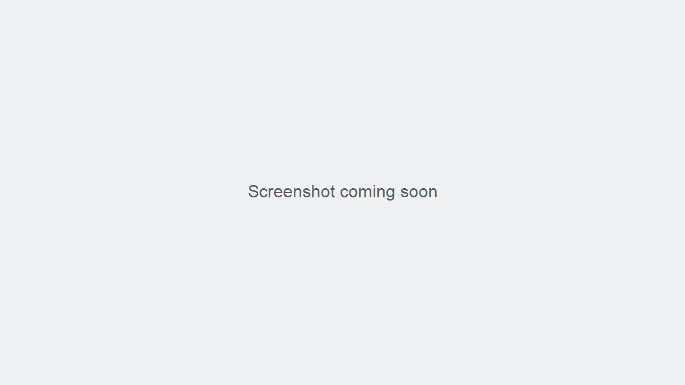

Receipts
You can open a receipt from an order's details, print it through your browser, or email it when the email action is available.
Open and print a receipt
- Select Order and find the order in the Orders list. Use the office filter or search field if needed. Expected result: The matching order appears in the list.
- Open the order's details. Expected result: Order Details shows the customer, items, totals, and payment summary.
- Select View Receipt. Expected result: The receipt opens in a separate window.
- Select Print. Expected result: Your browser's print dialog opens.
- Choose an available printer and print settings, then confirm printing. Expected result: The browser sends the receipt to the selected printer.

Figure: Find the saved order in the Orders list before opening its details (screenshot to be added)Figure: Review the saved order before opening its receipt (screenshot to be added)
Reprint a receipt
- Find and reopen the saved, non-void order.
- Select View Receipt, then Print. Expected result: The receipt is ready to print again.
Email a receipt
- Open the order details and select View Receipt.
- Select Email, enter the recipient's email address when prompted, and confirm. Expected result: The page reports whether the email was sent.
If receipt email reports an error, check the address and ask your administrator whether email service is available. Use Print if you need a paper copy.
The application does not provide a receipt-format or printer-setup page. Printing uses the browser's print dialog.
Figure: Open a saved order's receipt to print it or email it (screenshot to be added)